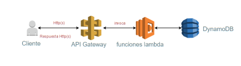
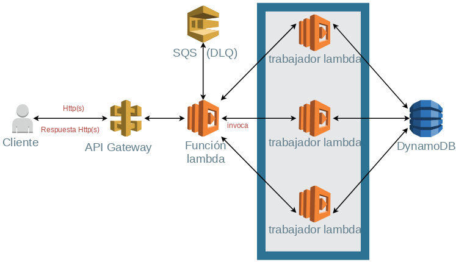
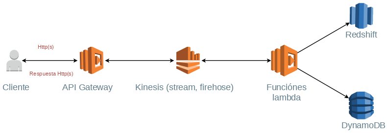
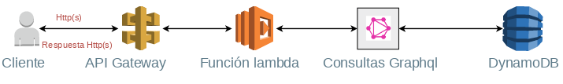

El patrón de Servicio Web Simple es el más sencillo y básico que se puede encontrar, el cliente puede acceder al servicio web a través de la API Gateway, que conduce a las funciones lambda requeridas, a su vez enlazadas a eventos desencadenantes como acciones en la base de datos no relacional DynamoDB.
El patrón Fan-out y Fan-in tiene como lema la frase “divide y vencerás”, ya que se debe dividir una tarea en subtareas, ejecutar varias funciones en paralelo y presentar el resultado que se obtiene.
El patrón de tuberías y filtros captura una gran cantidad de datos y realiza una distribución rápida a almacenes de datos o a variados servicios, tan rápido como estos se generen y cumpliendo con la gran cantidad de eventos. Posteriormente los servicios receptan estos datos, procesan la información, aplican la lógica de negocios necesaria a través de funciones lambda (análisis, transformación, reajuste) y despachen la información resultante a almacenes o bases de datos como DynamoDB.
El patrón grafico se utiliza para usar un solo punto final o única función para procesar múltiples peticiones con diferentes datos, este patrón también es usado para que esta única función tenga control y pueda invocar a otras funciones específicas dependiendo de los datos de entrada, de este modo es opcional configurar el API Gateway y se puede llamar a las funciones de forma manual.
